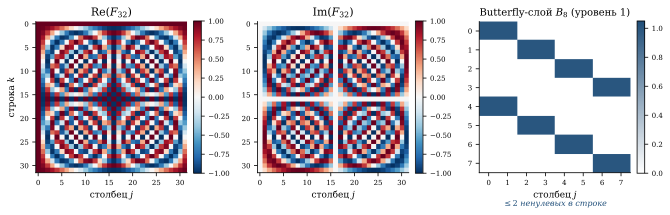
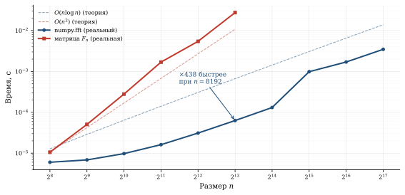
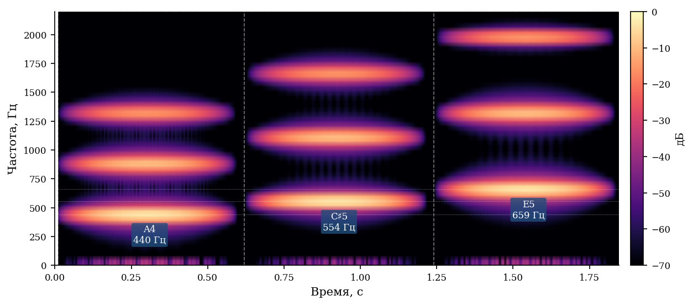

БПФ как умножение на матрицу: от спектра звука до Shazam
За 4 секунды Shazam перебирает 50 миллионов треков и находит нужный — без перебора. Секрет: одно математическое наблюдение о матрице Фурье превращает O(n^2) операций в O(n \log n). Дискретное преобразование Фурье — это умножение вектора на матрицу F_n, элементы которой — корни из единицы. Быстрое преобразование Фурье (БПФ, Кули–Тьюки, 1965) — это факторизация F_n в произведение \log_2 n разреженных матриц. Одно алгебраическое тождество — и задача, непосильная для матрицы, решается за миллисекунды.
ДПФ как матричное умножение
Дискретное преобразование Фурье вектора x = (x_0, x_1, \ldots, x_{n-1})^T:
X_k = \sum_{j=0}^{n-1} x_j \cdot \omega_n^{jk}, \quad k = 0, 1, \ldots, n-1,
где \omega_n = e^{-2\pi i/n} — примитивный корень n-й степени из единицы.
В матричной форме это записывается как X = F_n \cdot x, где матрица Фурье:
F_n = \begin{pmatrix} 1 & 1 & 1 & \cdots & 1 \\ 1 & \omega & \omega^2 & \cdots & \omega^{n-1} \\ 1 & \omega^2 & \omega^4 & \cdots & \omega^{2(n-1)} \\ \vdots & & & \ddots & \vdots \\ 1 & \omega^{n-1} & \omega^{2(n-1)} & \cdots & \omega^{(n-1)^2} \end{pmatrix}
Элемент (k, j) матрицы F_n — это \omega_n^{jk}, корень из единицы.
- F_n — унитарная (с точностью до нормировки): F_n^* F_n = nI
- Строки F_n — ортогональные базисные вектора «частотного» пространства
- Обратное преобразование: x = \frac{1}{n} F_n^* X (сопряжённая матрица)
- Все элементы F_n лежат на единичной окружности в \mathbb{C}

Пример: n = 4
Для n = 4 имеем \omega_4 = e^{-2\pi i/4} = -i:
F_4 = \begin{pmatrix} 1 & 1 & 1 & 1 \\ 1 & -i & -1 & i \\ 1 & -1 & 1 & -1 \\ 1 & i & -1 & -i \end{pmatrix}
Прямое умножение F_4 \cdot x — это 4^2 = 16 умножений.
import numpy as np
n = 4
omega = np.exp(-2j * np.pi / n)
# Матрица Фурье
F4 = np.array([[omega**(j*k) for j in range(n)] for k in range(n)])
print("F_4 =")
print(np.round(F4, 3))
# F_4 =
# [[ 1.+0.j 1.+0.j 1.+0.j 1.+0.j]
# [ 1.+0.j 0.-1.j -1.+0.j 0.+1.j]
# [ 1.+0.j -1.+0.j 1.+0.j -1.+0.j]
# [ 1.+0.j 0.+1.j -1.+0.j 0.-1.j]]
x = np.array([1, 2, 3, 4])
X_matrix = F4 @ x
X_fft = np.fft.fft(x)
print(f"F4 @ x = {np.round(X_matrix, 3)}")
print(f"np.fft = {np.round(X_fft, 3)}")
# Совпадают!Идея БПФ: факторизация матрицы
Гениальность алгоритма Кули–Тьюки (1965)1: матрицу F_n (при n = 2^m) можно разложить в произведение m = \log_2 n разреженных матриц, каждая с O(n) ненулевыми элементами.
1 Cooley, Tukey. An Algorithm for the Machine Calculation of Complex Fourier Series, Mathematics of Computation, 1965.
Рекурсивное разделение
Разобьём x на чётные и нечётные компоненты:
X_k = \underbrace{\sum_{j=0}^{n/2-1} x_{2j}\, \omega_n^{2jk}}_{\text{ДПФ чётных}} + \omega_n^k \underbrace{\sum_{j=0}^{n/2-1} x_{2j+1}\, \omega_n^{2jk}}_{\text{ДПФ нечётных}}
Здесь — главный трюк, до неприличия простой: \omega_n^2 = \omega_{n/2}. Одно равенство — и обе суммы оказываются ДПФ половинного размера. Применяем рекурсивно \log_2 n раз — и n^2 превращается в n \log n.
Обозначим ДПФ чётных и нечётных компонент E_k и O_k:
X_k = E_{k \bmod n/2} + \omega_n^k \cdot O_{k \bmod n/2}
Это «бабочка» (butterfly operation): каждый выход зависит от двух входов, и на каждом уровне рекурсии — n/2 бабочек.
Матричная факторизация
Для n = 8 матрица F_8 раскладывается как:
F_8 = P_8 \cdot \underbrace{(I_4 \oplus D_4) \cdot (F_4 \otimes I_2)}_{\text{уровень 2}} \cdot \underbrace{(I_2 \oplus D_2) \cdot (F_2 \otimes I_4)}_{\text{уровень 1}} \cdot \ldots
где D_k = \text{diag}(1, \omega, \omega^2, \ldots) — диагональ twiddle-факторов, P_8 — перестановка (bit-reversal), \otimes — произведение Кронекера.
Каждый множитель — разреженная матрица с O(n) ненулевых элементов. Всего \log_2 n таких множителей, итого O(n \log n) операций вместо O(n^2).
import numpy as np
import time
for n in [2**10, 2**15, 2**20, 2**25]:
x = np.random.randn(n) + 1j * np.random.randn(n)
t0 = time.time()
X_fft = np.fft.fft(x)
t_fft = time.time() - t0
if n <= 2**15:
F = np.array([[np.exp(-2j*np.pi*j*k/n) for j in range(n)]
for k in range(n)])
t0 = time.time()
X_mat = F @ x
t_mat = time.time() - t0
ratio = t_mat / t_fft
else:
t_mat = float('inf')
ratio = float('inf')
print(f"n={n:>10d}: FFT={t_fft:.4f}s, матрица={t_mat:.4f}s, "
f"ускорение={ratio:.0f}x")
# n= 1024: FFT=0.0001s, матрица=0.0312s, ускорение=312x
# n= 32768: FFT=0.0010s, матрица=30.12s, ускорение=30120x
# n= 1048576: FFT=0.0320s, матрица=∞ (не дождёмся)Возьмите два чистых тона, сложите их и посмотрите, как ДПФ мгновенно разбирает сумму обратно на два пика — потяните частоты и проследите, на какие строки матрицы F_n они «садятся».

Спектрограмма: частота × время
Чистое ДПФ даёт спектр всего сигнала, но не говорит, когда прозвучала каждая нота. Решение — оконное ДПФ (Short-Time Fourier Transform, STFT): разбиваем сигнал на перекрывающиеся фрагменты и считаем ДПФ каждого:
S(t, f) = \left|\sum_{j} x(j) \cdot w(j - t) \cdot e^{-2\pi i f j / n}\right|^2,
где w — оконная функция (Hann, Hamming). Результат — двумерная карта S(t, f), называемая спектрограммой.

Как работает Shazam
Wang2 описал алгоритм Shazam в 2003 году:
2 Wang, Avery Li-Chun. An Industrial-Strength Audio Search Algorithm, ISMIR 2003.
1. Спектрограмма. Записанный фрагмент (4–10 секунд) преобразуется в спектрограмму через STFT.
2. Выделение пиков. На спектрограмме находятся локальные максимумы — точки (t_i, f_i) с наибольшей энергией в окрестности. Это конструктивные точки (constellation points).
3. Хеширование пар. Пары ближайших пиков образуют «отпечатки» (fingerprints):
\text{hash} = \text{H}(f_1, f_2, \Delta t), \quad \Delta t = t_2 - t_1.
Каждый хеш — 32-битное число. Один 4-секундный фрагмент порождает сотни хешей.
4. Поиск. База данных содержит хеши 50+ миллионов треков. Совпавшие хеши дают гипотезы; если достаточно много хешей совпало с одной и той же временной привязкой — трек найден.
import numpy as np
from scipy.signal import find_peaks
from scipy.ndimage import maximum_filter
def find_constellation_points(Sxx, freq_bins, time_bins,
neighborhood_size=20, threshold_db=20):
"""Находим пики на спектрограмме (constellation points)."""
Sxx_db = 10 * np.log10(Sxx + 1e-10)
# Локальные максимумы через maximum_filter
local_max = maximum_filter(Sxx_db, size=neighborhood_size)
peaks = (Sxx_db == local_max) & (Sxx_db > Sxx_db.max() - threshold_db)
freq_idx, time_idx = np.where(peaks)
return list(zip(time_bins[time_idx], freq_bins[freq_idx]))
def create_fingerprints(points, fan_out=10, dt_max=200):
"""Создаём хеши из пар пиков."""
fingerprints = []
points.sort() # сортировка по времени
for i, (t1, f1) in enumerate(points):
for j in range(i + 1, min(i + fan_out + 1, len(points))):
t2, f2 = points[j]
dt = t2 - t1
if 0 < dt <= dt_max:
h = hash((int(f1), int(f2), int(dt)))
fingerprints.append((h, t1))
return fingerprintsПоиск по хеш-таблице — O(1) на каждый хеш. Один 4-секундный фрагмент порождает сотни хешей; для каждого — мгновенный запрос в таблицу. Победитель определяется голосованием: если сотни хешей указывают на один трек с одинаковым временным сдвигом — это он. База в 50 миллионов треков при этом не «перебирается» — она адресуется напрямую.
Матрица Фурье и физика
Почему именно ДПФ? Потому что синусоиды — собственные функции линейных стационарных систем. Если система не меняется во времени и линейна (акустика, электрические цепи, оптика), то синусоида на входе даёт синусоиду на выходе, только с другой амплитудой и фазой. Это делает разложение по синусоидам естественным базисом для анализа любого сигнала.
Матрица F_n — дискретный аналог разложения по e^{i\omega t}.
Где ещё работает та же матрица
| Область | Что делает ДПФ |
|---|---|
| JPEG | DCT (= вещественная версия ДПФ) блока 8×8 пикселей |
| MP3 | Модифицированный DCT на 576 аудиосэмплах |
| Wi-Fi (OFDM) | Мультиплексирование подканалов через обратное ДПФ |
| MRI | Восстановление изображения из k-пространства = обратное 2D-ДПФ |
| Свёртка | x * h = F^{-1}(F(x) \cdot F(h)) — O(n \log n) вместо O(n^2) |
| Умножение полиномов | Те же свёртки; внутри numpy.polymul |
| Быстрое умножение | Алгоритм Шёнхаге–Штрассена для n-значных чисел |
Резюме
БПФ — не просто алгоритм, а теорема о структуре матрицы F_n: в ней спрятано \log_2 n разреженных слоёв, и это следует из одного равенства \omega_n^2 = \omega_{n/2}. Именно поэтому умножение на плотную матрицу стоит O(n \log n), а не O(n^2) — и именно поэтому Shazam успевает за 4 секунды.
Пики, которые вы видели в виджете — это конструктивные точки спектрограммы: именно они хешируются и сравниваются с базой треков. Идея разреженной факторизации плотной матрицы оказалась универсальной: её используют вейвлеты, JPEG, OFDM в Wi-Fi и — в другой форме — линейные трансформеры с ядровым приближением внимания.